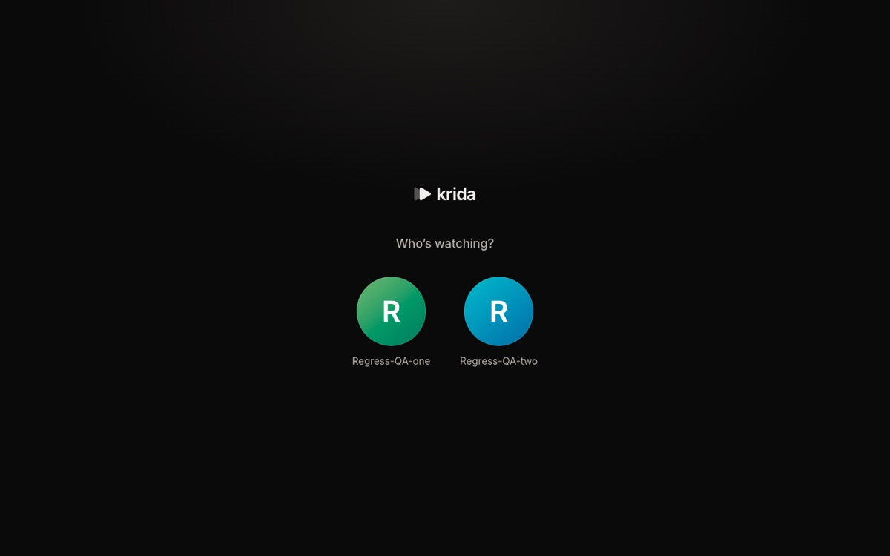
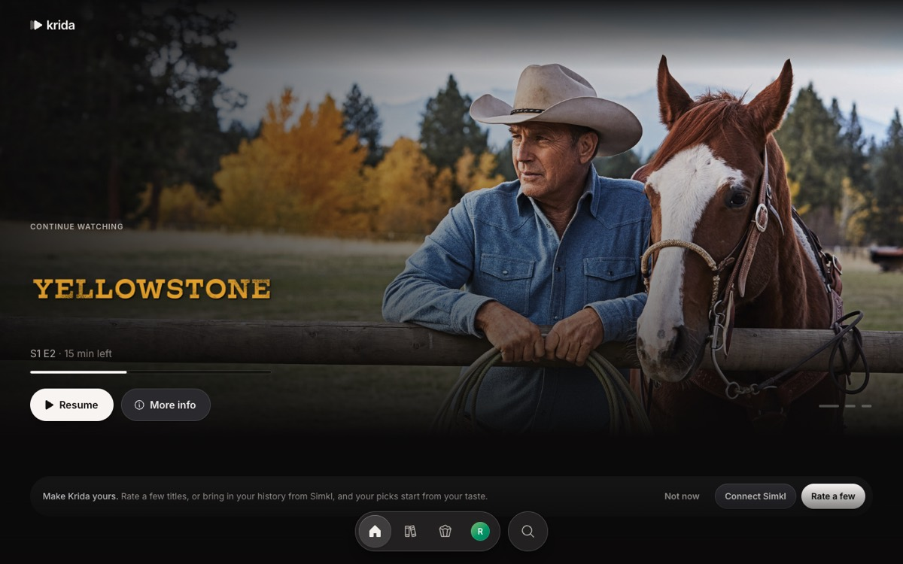
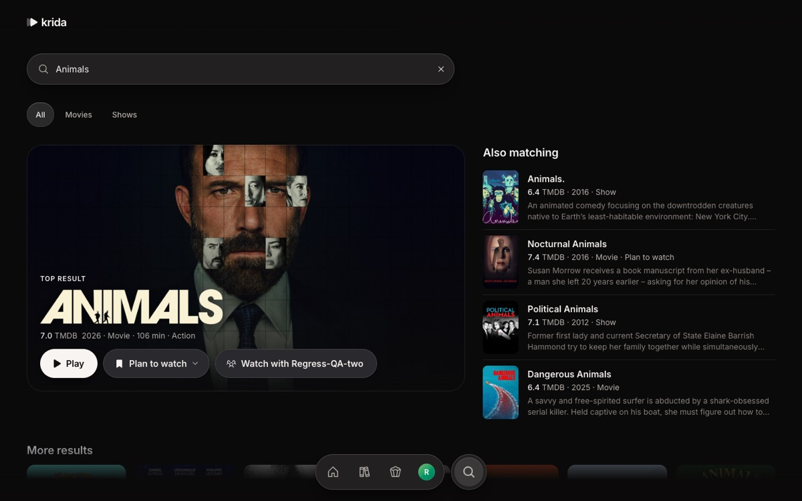
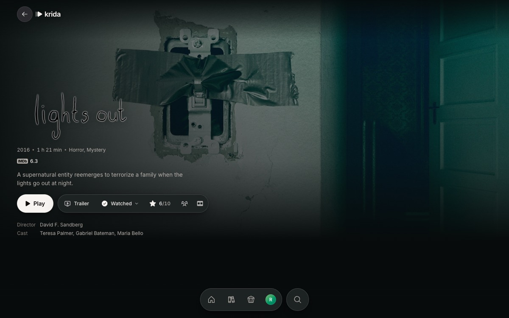
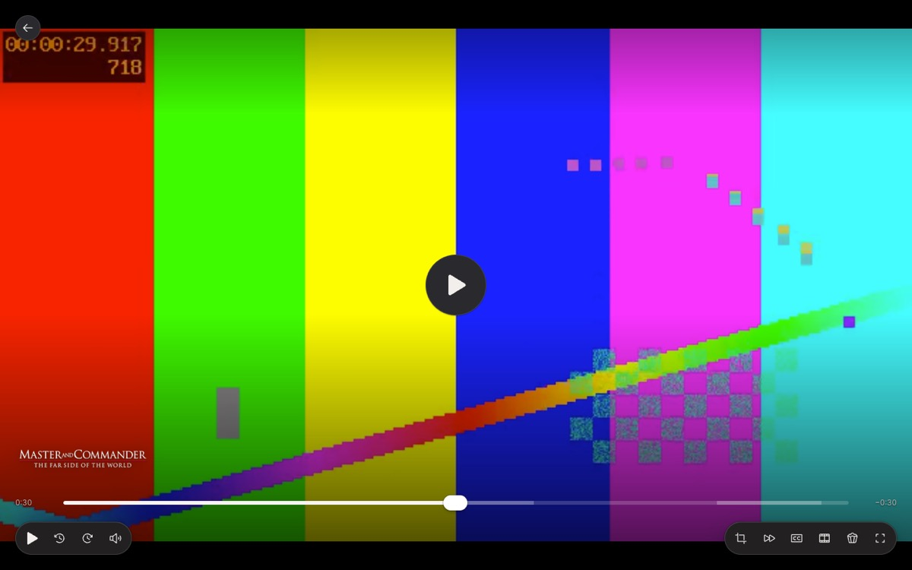
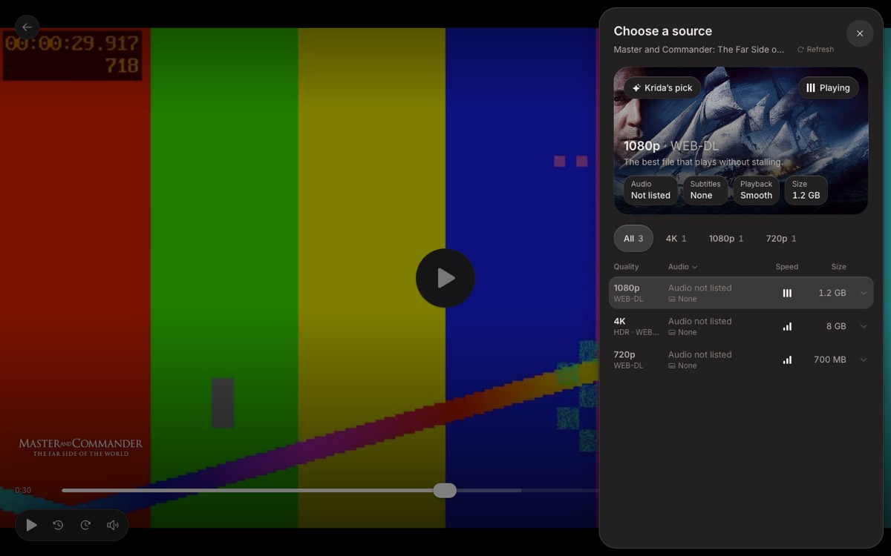
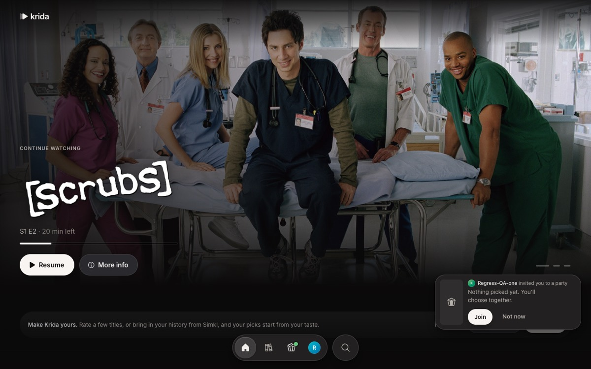
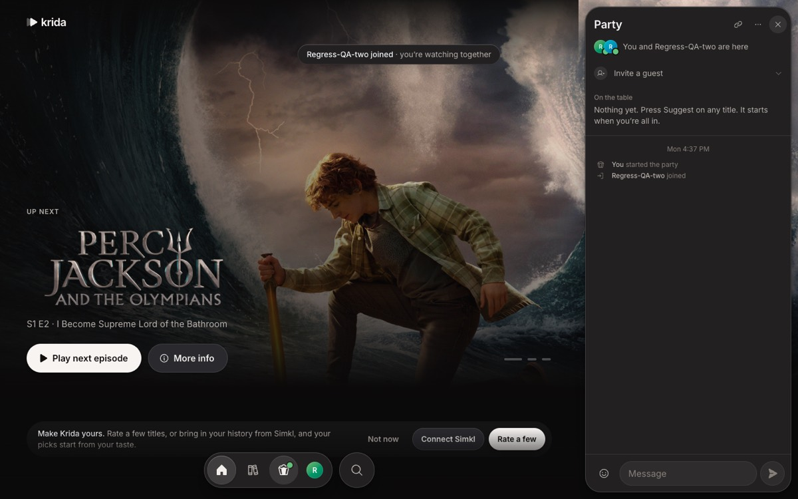

How Krida works, from Play to picture
The page you see runs in your browser. It asks Vercel for anything that's the same for everyone, asks Convex for anything that's yours, and gets the film itself straight from TorBox.
This guide follows one evening: sign in, browse, press Play, then watch with a friend. Each step names the files that do the work.
Screenshots come from the QA app run from this repo on , with real catalog data and a stand-in test video.
Five words the rest depends on
- Profile
- One person's account: a name, a password and their own tables (history, Plan to watch, ratings, plays). There are two, plus temporary guest profiles.
- Title
- A movie, show or anime, named by its IMDb id (
tt…). An anime also has a Kitsu id;convex/lib/titleIds.tstreats both as one title. - Source
- One file of a title that one of the profile's stream addons found, such as a 1080p WEB-DL of 2.1 GB. Krida keeps up to 150 per title.
- Stream
- A source that TorBox has turned into an HLS playlist the browser can play. Convex keeps it in the
streamstable. - Room
- Where playback happens. Every Play makes one, alone or in a party. It holds the title, the stream and one shared clock.
First, a guess
You press Play on a film. Which computer sends the film's bytes to your browser: Vercel, Convex or TorBox?
Answer: TorBox's CDN, and why
Convex hands your browser a playlist, a short text file listing the video's segments. Each line points at TorBox's CDN, which needs no account key, so the browser downloads the segments directly. Vercel never sees the film. If you guessed Convex, step 6 shows the one small file it does pass along.
1Sign-in gives you a token
The profile gate lists both profiles. Picking one and typing its password calls profiles.signIn.

- Convex hashes the password with PBKDF2 (SHA-256, 100,000 rounds, a salt per profile) and compares it in constant time.
- Five wrong tries lock the profile for 5 minutes.
- On success it makes a random 32-byte token, stores only its SHA-256 hash in
sessions, and returns the token. - The browser keeps the token in
localStorageand sends it with every query and mutation.requireProfileinconvex/lib/auth.tsturns it back into a profile.
2Home comes from two places
Rows that are the same for everyone come from Vercel. Rows that depend on you are worked out from your own data.

| Row | Built by | Refreshed |
|---|---|---|
| Trending, catalogs, genres | /api/rows on Vercel (server/catalogs.ts) | At most every 6 h per row |
| Continue watching, Plan to watch, Simkl rows | The browser, from your synced tables (src/data/rows.ts) | As soon as a row changes |
| Top picks, Because you watched, genre rows, For you and a friend | Browser builds your taste, POST /api/recs scores it, recs.save keeps it | A minute after your taste changes, or when picks are 6 h old |
| What a friend has been watching | Convex, convex/catalogs.ts | Live; hidden by Private mode |
How picks are scored is in docs/recommendations.md.
3The browser keeps your lists
Each browser keeps a copy of your seven own tables in IndexedDB, so the Library, poster badges and Home rows read nothing from the database.
- Every mutation is built from
convex/functions.ts. Its trigger writes one row per changed document intochanges; a lint rule stops anyone bypassing it. sync.pullreturns rows changed since the browser's cursor;src/data/sync.tsxmerges them into the copy.- Your own change shows at once as an optimistic patch, until the server's row arrives.
- Changes are kept 30 days. A copy older than that downloads everything again (
sync.snapshot).
4Title data never touches Convex
A title's plot, cast, episodes and IMDb score come from Cinemeta, which the browser asks directly. Search, artwork and the other scores come from Vercel functions, and Vercel's CDN caches their answers.
Endpoints that spend a paid allowance (title ratings from MDBList, More like this, picks, timeline frames) first check your Krida session against Convex (server/session.ts). Everything else is public.


/api/search asks TMDB. "Plan to watch" on Nocturnal Animals comes from your own synced copy.

/api/title refuses a QA session.Opening a title page also asks Convex to fetch its source list in the background (sources.warm). Resting the pointer on Play for 300 ms goes further and prepares the whole stream (rooms.warm), so the click usually starts at once.
5Play builds the stream
Play calls rooms.create, which makes a room and schedules engine.prepare. The player opens at /watch/<room> and shows each step as the backend reaches it.
createstream returns a playlist token. Convex saves a streams row and marks the room ready.These are the exact messages from convex/engine.ts; a copy that fails adds "That copy didn't work. Trying another."
An account on another debrid service (Real-Debrid, AllDebrid, Premiumize…) skips TorBox: after finding sources, "Asking your debrid service…" follows the addon's link to the file itself (resolveDirect), and the stream is that link. Krida for Mac and Windows plays it in mpv; a browser plays it straight from the link when it's MP4 or WebM it has codecs for (and picks those copies first), and otherwise the room offers the desktop app, the players this device opens links in, the link itself and a playlist (playsIn.ts, elsewhere.tsx). Parties stay on TorBox.




A stream is reused: the same title for the same languages and screen starts at once for 3 h, and after that one TorBox call restarts it. A daily cron sweeps streams nobody started for 30 days.
If you pick a source, later episodes of that show try the same kind of copy first (room.binge). If every copy fails, the error says what happened to each and can offer "Play in 720p".
6The video skips Krida's servers
The browser's hls.js asks Convex for the playlist. Convex fetches it from TorBox with the account key, rewrites it, and hands back a version with no key in it.
If TorBox's playlist session has expired, the HTTP action calls createstream again for the same file, saves the new token and retries once (convex/http.ts).
One chart covers every room
Every Play, retry, source pick and next episode starts one job, so a room can only be in these 9 states. TLC, a model checker, walked all 180 states of a model of this code and checked three rules in each.

| Rule | Result | How we know |
|---|---|---|
| What the room shows comes from its newest job | Holds | TLC. With the jobId check taken out of the model, it breaks in 3 steps. On the real functions, an old job's setReady and setError change nothing. |
| The picture is the title the room is on | Holds | TLC, and it breaks the same way with the check taken out. |
| A spinner has a job behind it | Breaks | Press Play, then the job dies. On the real functions, the room still said "Finding sources…" after 40 minutes of heartbeats and sweeps. |
A job can die with no write, because prepare only reports errors it catches. Nothing restarts it and an open tab keeps the room alive, but "Pick a source myself" stays on screen.
We haven't seen this in production, and a dead job sends no event for PostHog to count. The likeliest cause is a last copy that hangs, because it has no time limit and Convex ends an action at 10 minutes (from Convex's docs, not tested).
A warm-up and Play share one build
Resting on Play starts a build, and pressing Play waits for it instead of adding the file to TorBox twice. A row in streamBuilds says who is building, and it counts for 3 minutes.

| Rule | Result | How we know |
|---|---|---|
| TorBox gets one build of Krida's pick at a time | Breaks | Rest on Play, the warm-up starts, 3 minutes pass, press Play, Play takes over. claimBuild and releaseBuild did exactly this when replayed. |
| Play never waits forever | Holds | TLC, including a warm-up that dies: its claim runs out at 3 minutes. |
This one costs a second add to TorBox. Production ran 53 Play jobs from 30 Oct to 2 Nov, the slowest took 11 s, and none passed 3 minutes; warm-ups themselves are not timed.
7A party shares one clock
A room stores one anchor: "at server time T, playback was at P seconds, playing or paused". Every player works out where it should be from that, so nobody streams their position to anyone.




messages.Pressing pause or seeking calls rooms.control, which writes a new anchor and adds one to seq.
Each player first measures its clock offset to the server (four round trips, keeps the fastest). Then, once a second, useRoomSync in src/features/player/playbackSync.ts compares its video with the anchor.
| Player | Video at | Off by | What it does |
|---|---|---|---|
| Your laptop | 630.2 s | +0.2 s | Nothing: under 0.35 s is in step |
| Friend's phone | 629.0 s | −1.0 s | Plays at 1.05× until it catches up |
| Friend's laptop | 630.9 s | +0.9 s | Plays at 0.95× until it is back in step |
| Someone who just rejoined | 624.0 s | −6.0 s | Jumps to 630 s: over 2.5 s is too far to nudge |
Invites, countdowns, holding for buffering and leaving have their own guide: docs/party/party-guide.html.
The usual wrong idea
"Watching alone skips the room machinery." It doesn't.
Every Play outside a party calls rooms.create and makes a room of kind solo, with the same anchor, stream and clock as a party. That is why a friend can join you mid-film from Home and land at the right second.
Alone at 1.5×, the player re-anchors the room every 10 s instead of correcting drift, so a reload resumes where you were.
8Simkl and the other apps
Simkl syncs in both directions. Pulls run when someone opens Krida or comes back to the tab, at most every 10 minutes, never on a timer.
Writes go through one outbox (convex/lib/simklOutbox.ts) that waits 45 s and batches. Details: docs/simkl.md.
| App | What it is | What differs |
|---|---|---|
| Web | The site at krida-open.vercel.app | Plays TorBox's HLS re-encode in a <video> |
| Windows and Mac | Tauri window around the live site (desktop/) | mpv plays the original file under the page: HEVC 10-bit, Dolby Vision, TrueHD |
| Android | WebView of the live site (android/) | A bridge adds real brightness, volume, haptics and picture in picture |
| Timeline previews | Cloudflare Worker (workers/frames/) | Reads keyframes out of TorBox, so Vercel's 10 GB a month isn't spent on them |
All of them load the same site, so a deploy reaches every app without a new build, and parties mix them freely on one clock.
Production reports to PostHog from the browser, /api and Convex: errors, replays and timings such as play_build. Details: docs/ops.md.
Where new code goes
| If the thing is… | Put it in | Because |
|---|---|---|
| The same for everyone (catalog, ratings, artwork) | api/ + server/ | The CDN caches it and it never reads the database |
| Yours, or has to sync live (lists, rooms, chat) | convex/ | Queries update every open tab by themselves |
| Needs a secret (TorBox, Simkl) | convex/ or server/ | Only VITE_ variables reach the browser |
| Plain logic both sides use | shared/ | No React, imports name their .js file |
| Something a person does on screen | src/features/<name>/ | Other features import it only through its index.ts |
Check yourself
Ben rates a film on his phone. How does his laptop's Library learn it?
The rating mutation's trigger notes one row in changes. The laptop is subscribed to sync.pull, so Convex re-runs it and sends that single changed row. The laptop merges it into its IndexedDB copy, and the Library redraws from the copy.
You rest on Play for half a second, then click. Why does it start faster, and why doesn't TorBox get the file twice?
After 300 ms, rooms.warm starts building the stream. When the click's prepare runs, engine.claimBuild sees a build under way for the same title and viewer and waits for it, showing its step, instead of starting a second build.
The job dies during "Adding to TorBox". What does the room do, and how do you get out?
The room keeps saying "Adding to TorBox" with nothing working on it, and your heartbeats keep it open. "Pick a source myself" starts a new job, and so does going back.
In a party your video is 1.8 s behind. What happens?
1.8 s is over 0.35 s and under 2.5 s, so the player plays at 1.05× until it is within 0.35 s, then goes back to 1×. No jump.
Someone copies a playlist URL out of DevTools and posts it. What did they leak?
Your Krida session, not the TorBox account. The URL's t= is your session token, so it works for anyone until that session signs out. The TorBox key is never in it: Convex adds the key only to its own request to TorBox and strips token= from every line it returns. Segment links carry TorBox's per-stream presigned token instead.
More detail
The stream pipeline, function by function
usePlay(src/features/play/play.ts) callsrooms.createwith the title, a start time and your screen type.rooms.createchecks the token, makes asoloroom, adds you as a member and callsstartJob, which bumpsjobIdand schedulesengine.prepare.prepareloads the room, reads your audio and subtitle languages, and callssharedStream: reuse a stream under 3 h old, wait on a build in progress, restart one from the last 30 days, or build a new one.buildStream:loadSources(the stream addons, cached as a file in Convex storage for 20 min),rankSources, then for up to 4 candidates (other copies of the same file, then files of the same quality, skipping links known to be gone)resolveToTorboxandcreateStream. IntroDB's intro, recap and credit times are fetched alongside.setReadyputs the stream on the room. The player subscribes torooms.get, sees it, and points hls.js at<convex-site>/hls/playlist.m3u8?s=…&a=…&t=….- If someone presses Play on something else meanwhile,
jobIdmoves on, and the oldpreparestops at its next step (Superseded).
Scheduled jobs (6 crons in convex/crons.ts)
| Job | When |
|---|---|
| Sweep parties nobody is in | Every 15 min |
| Compute Stats and Wrapped | Daily, 09:00 UTC |
| Drop source lists older than 2 days | Daily, 10:00 UTC |
| Drop streams nobody started in 30 days | Daily, 10:05 UTC |
| Forget sync changes older than 30 days | Daily, 10:10 UTC |
| Forget old failure logs | Daily, 10:15 UTC |
None of them calls Simkl; tests/apiSnapshot.test.ts fails if one does.
How this guide was checked, and what wasn't
- Every number and function name was read from the code at commit
89e2fb2(main, 2 Nov 2026). - Screenshots: the regress walk (
scripts/regress/walk.ts) driven againstnpm run qa -- up, a throwaway local backend with seeded QA profiles. Catalog data and artwork came from the live site's public/api. - The player and party screenshots play a one-minute stand-in video from
scripts/regress/providers.ts, not a real TorBox stream. Real playback, Simkl sync, and the Windows, Mac and Android apps were not run for this guide. - The party table is worked from the thresholds in
playbackSync.ts(0.35 s, 2.5 s, 0.95× and 1.05×), not measured in a live party. - The two bug paths and the old-job check were replayed with convex-test on the real functions. The job's death was stood in for by a
preparethat never runs; a real crash or 10-minute limit was not triggered. - The job count is a read of PostHog's
play_buildevents on 2 Nov. They started on 30 Oct and don't cover warm-ups.
What the charts leave out, and how to redraw them
Leaving out time, invites and switch requests, the notes shown while copies are tried, restarting a stream after 3 h, and more than one older job running at once. The room chart draws "something else goes on", going back and leaving only from the states where you would decide them; they are open from every preparing step too.
The models and rules are in how-krida-works/statechart/. From that folder, with a new folder for --out:
~/.claude/skills/statechart/scripts/statechart KridaRoom.tla --config KridaRoom.cfg --view room.view.mjs --out /tmp/room
~/.claude/skills/statechart/scripts/statechart KridaBuild.tla --config KridaBuild.cfg --view build.view.mjs --out /tmp/buildDeeper docs in this repo
docs/architecture.md: the full file map and API limits.- docs/party/party-guide.html: how a party works, step by step.
docs/product-feel.md: who Krida is for and how it should feel.docs/database-reads.md: Convex bandwidth rules, before adding a query.docs/recommendations.md,docs/simkl.md,docs/desktop.md,docs/ops.md.